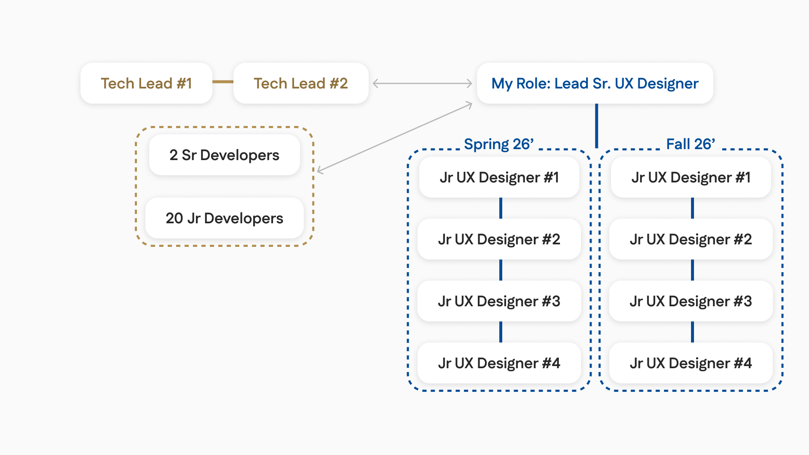
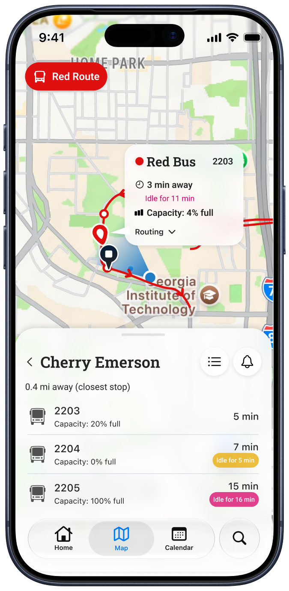
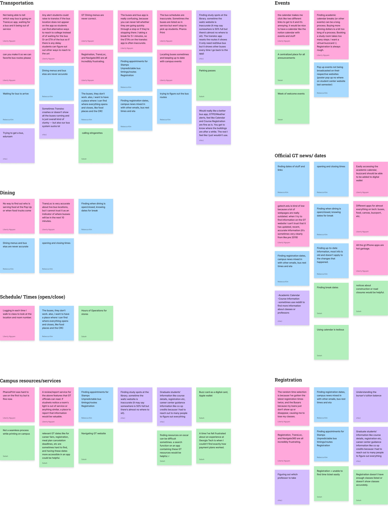

Home
Personalized feed for official events, dates, dining, news, resources, and building capacity.
10 months
Jan '26 - Present
Beta Fall '26, launch Spring '27
Lead Sr. UX Designer
1 Lead UX Designer
8 Jr UX Designers
2 Tech Leads
6 Sr Developers
20 Jr Developers
Figma
Claude
XCode
Github
The Georgia Tech App brings a typical day in a life of a student across five different apps into one single app. Students check one website for dining menus, another app for the bus schedule, and a third for booking study rooms.
As Lead Sr. UX Designer, I led two teams of four junior designers (Spring, Fall) from a project roadmap, research, lo-fi, mid-fi, high-fi, ideations, design critiques, and dev handoffs.
A Georgia Tech student's day runs through five different apps and sites: one for dining menus, one for bus times, and another for study room booking.
Each has its own login, layout and logic.
A new, Official Georgia Tech app for 50K+ students and staff that places a student's day into a single app.
Fall '26 Beta, Spring '27 Launch
I led 8 Junior UX Designers to design & collaborate with 26 Developers.

How might we bring a student’s whole campus day into one app?
Personalized feed for official events, dates, dining, news, resources, and building capacity.

Add events to calendar and follow campus organizations.

Live ETAs, bus capacity, driver statuses, and a nudge when walking is faster

Find food nearby, then see today’s menu by station

Printers and other campus services, with access hours and directions
One app, a campus-sized audience, and two design cohorts
campus apps combined into one official app
students, faculty and staff
junior designers across two cohorts, Spring and Fall ‘26
Survey feedback, grouped with affinity mapping into seven themes
[Largest cluster] Students struggled to read bus routes and times, and didn't trust arrival estimates or service status.
Became: Live ETAs, bus capacity and favorite routes
Students couldn't rely on menus or hours, and had no way to see what was being served at pop-ups or food trucks.
Became: Menus by station and clear open or closed status
Students wanted one place to check when things are open or closed, from food to the CRC.
Became: Hours shown wherever a place appears
Events were hard to find in one place, and adding them to a calendar took too many steps.
Became: One feed for clubs and events, with add to calendar
Key dates and announcements were scattered across email, apps and web pages, and students didn't trust what they found.
Became: Filterable official dates and news
Services like printing, appointments, study spots and graduate information were hard to find or inconsistent.
Became: Campus links, printers and universal search
Registration was a repeated source of frustration, from timing to missing classes.
Became: Registration times in Official Dates and Course Scheduling (future)

Three principles guided every screen
Trust was the loudest complaint, so the highest-traffic information, such as buses, menus and building capacity, shows real-time status.
Most daily questions are about where something is. The map is the hub, and dining, buses and printers open as sheets over it.
Home is a personalized feed of what matters right now, and students can customize it.
Eight flows, one four-tab app
Instead of one screen per old app, we mapped a student’s whole day into eight flows and organized the app around a four-tab bar: Home, Map, Calendar and Search. Designers each owned flows end to end, and we reviewed them together in critiques so patterns stayed consistent.
Guest mode, a short tour, or SSO login
Semantic search, capacity, dining, campus links and help
Buses, search, favorites, and walk, bike, bus or car routes
Printers, microwaves, vending and facilities on the map
Halls, food trucks, menus and favorites
Clubs, filters, event pages and add to calendar
Recommended and filtered articles, share and contact
A filterable view of the academic calendar
How the app compares with the tools students used before
Students couldn’t tell a bus’s direction or whether it was in service, called arrival times unreliable, and had to reselect routes every time the app reopened.
Live ETAs show how full each bus is and how long it has been idle, with favorite routes and a hint when walking is faster, all on the same map as dining and printers.
A dense table of dates narrowed by four dropdowns for year, semester, session and category, inside the full registrar website with a note that dates may change.
A timeline grouped by month with filter chips for classes, exams and finals, term and type tags like Fall and Registration, and upcoming dates previewed right on Home.
A separate website from the rest of campus life. Students said pop-up events weren’t broadcast anywhere central and wanted a calendar with events built in.
Your Events and Recommended Events in one feed, club pages you can follow, filters for official GT, sports and design, and add to Google, Apple or Outlook calendar in one tap.
Where we weighed options and made tradeoffs
Where should dining and campus services live?
Version 1 had Home, Facilities, Map and Dining tabs, with dining and campus services each living in their own tab.
The final app has Home, Map, Calendar and Search, with dining, printers and buses opening as sheets over the map.
Dining and Facilities no longer needed tabs of their own, which freed the tab bar for Calendar and Search.
Design critiques with the team were a key factor in moving services into the map.
Its own tab with filters, favorites, row and cube views, menu preview, station tabs, dietary filters and flagging of missing menu items.
Appliances, building capacity, floor plans, printers, parking areas and a full study-room booking flow.
Dining, printers and buses open as bottom sheets over the map, so students stay oriented and Directions is always one tap away.
“Dining menus and bus ETAs are never accurate.”
Show how full each bus is and how long it has been idle, with color-coded capacity rings for buildings, so students can judge for themselves.
“A search function on an app containing these GT resources would be helpful.”
A search tab with recents and a breadcrumb that shows where each result lives, such as Maps > Dining.
We designed road-condition reporting, where students flag blocked roads or construction on the map, but parked it for a later release so the first version stays focused on the daily loop of buses, dining and campus services.
Two cohorts, one product
I owned screens myself so designers could reference. When deadlines got tight, I stepped in on Jr Designers' features so the app would be shipped on schedule.
Nine designers could have produced nine different apps. I created the shared design system and ran critiques to ensure a consistent design language between features.
I led the collaboration between Design and Eng (2 tech leads and 26 developers) to turn designs into a shippable app - considering eng constraints and tradeoffs.
After launching beta in Fall '26, we'll gather beta feedback according to our success metrics and refine ahead of the Spring ‘27 launch.
Additionally, we're planning to add in features like course scheduling, library reservations, and AI-powered stretch features.